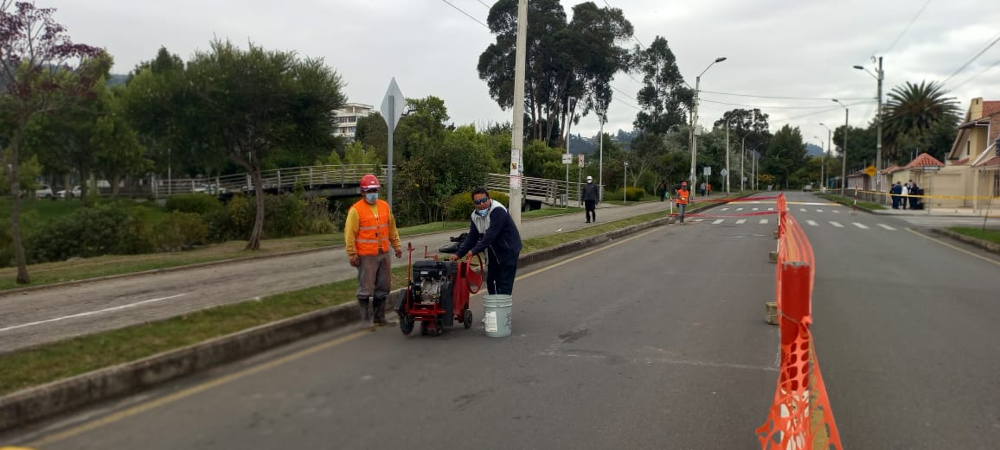

Menu
{{m.nombre}}
Cerrar Sesion
Bienvenido NombreUsuario
Servicios
Crear Multas
Multas
Agencias
Acerca de
Noticias
En este feriado, controles estratégicos para la seguridad vial en Cuenca
Ante la salida de ciudadanos e ingreso de turistas a Cuenca

Inician obras de la segunda fase de “Cuenca Unida en Bici”
Los trabajos de la segunda fase del proyecto Cuenca Unida en Bici